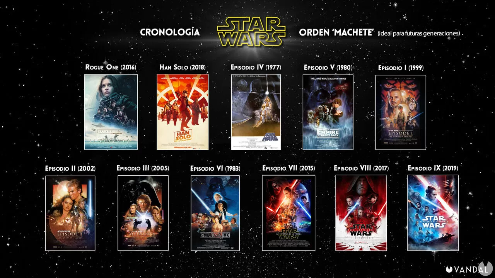

| Episodio | Nombre de la pelicula | Año de estreno |
|---|---|---|
| Episodio I | La Amenaza Fantasma | 1999 |
| Episodio II | El ataque de los clones | 2002 |
| Episodio III | La Venganza de los Sith | 2005 |
| Episodio IV | Una Nueva Esperanza | 1977 |
| Episodio V | El Imperio Contraataca | 1980 |
| Episodio VI | El Retorno del Jedi | 1983 |
| Episodio VII | El Despertar de la Fuerza | 2015 |
| Episodio VIII | Los Últimos Jedi | 2017 |
| Episodio IX | El ascenso de Skywalker | 2019 |
Estas son las películas principales de la saga numerada. Además de estas, hay películas independientes y spin-offs como "Rogue One: Una Historia de Star Wars" (2016) y "Han Solo: Una Historia de Star Wars" (2018), pero estas no forman parte de la saga numerada y se sitúan en momentos específicos dentro de la línea de tiempo de la saga.

Películas de Star Wars